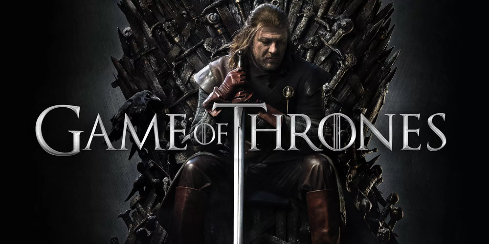
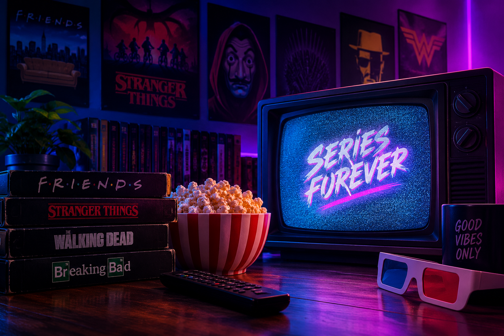
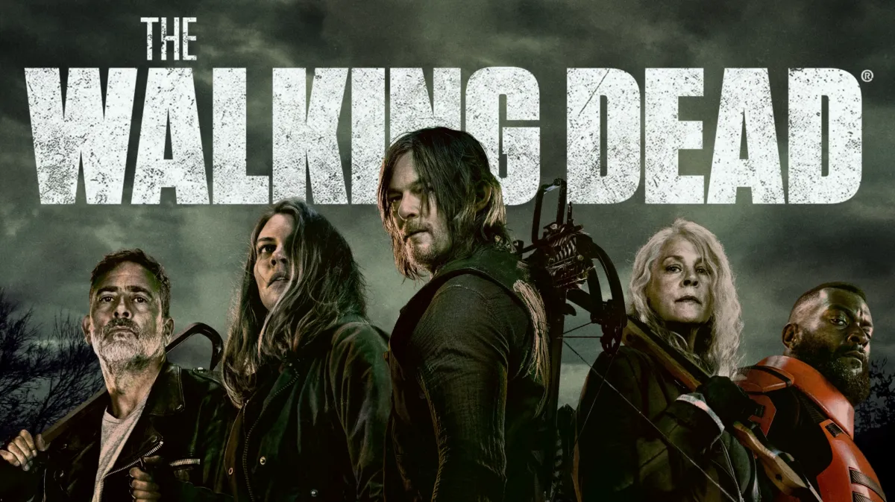
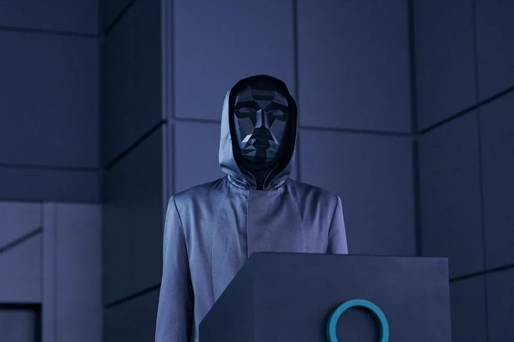
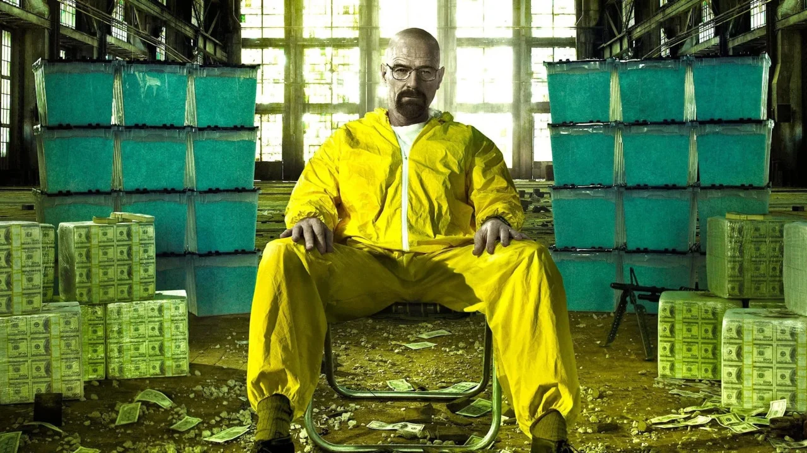
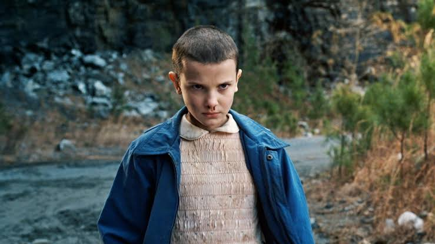
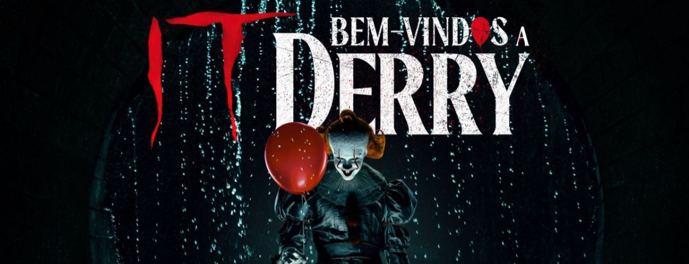
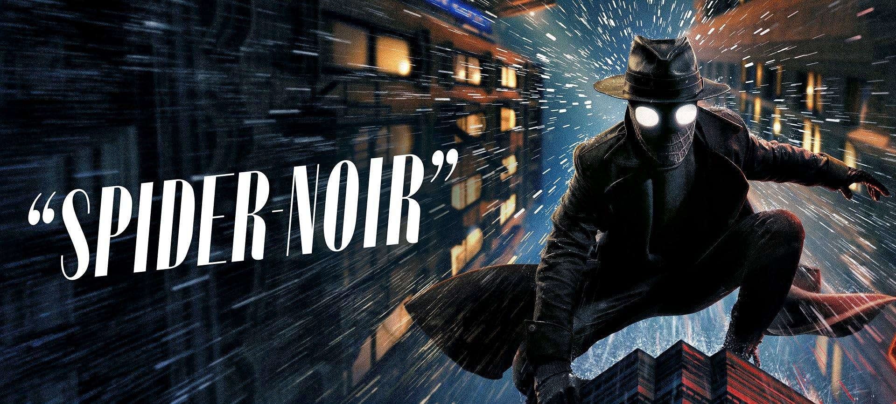
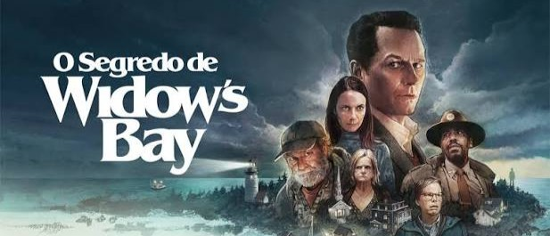

aventura
stranger things
A história se passa nos continentes fictícios de Westeros e Essos, onde poderosas famílias nobres (as Casas) travam uma violenta e sangrenta disputa política pelo controle
DOS ANOS 2010 AOS ANOS 2026
Reviva histórias incríveis, personagens inesquecíveis e momentos que continuam vivos na memória.
Apertar o play
ONDE TUDO COMEÇOU
Algumas histórias nunca envelhecem. Reunimos produções que conquistaram gerações e continuam despertando lembranças, emoções e a paixão pela cultura pop.

aventura
A história se passa nos continentes fictícios de Westeros e Essos, onde poderosas famílias nobres (as Casas) travam uma violenta e sangrenta disputa política pelo controle

suspense e ação
um vice xerife que acorda de um coma perante a um apocalipse zumbi, tendo que enfrenta-los junto ao seu grupo
PERSNAGENS ICONICOS

Round 6

breaking bad

Stranger Things
O PASSADO CONTINUA PRESENTE

01
TERROR

02
HERÓIS

03
MISTÉRIO E SUSPENSE